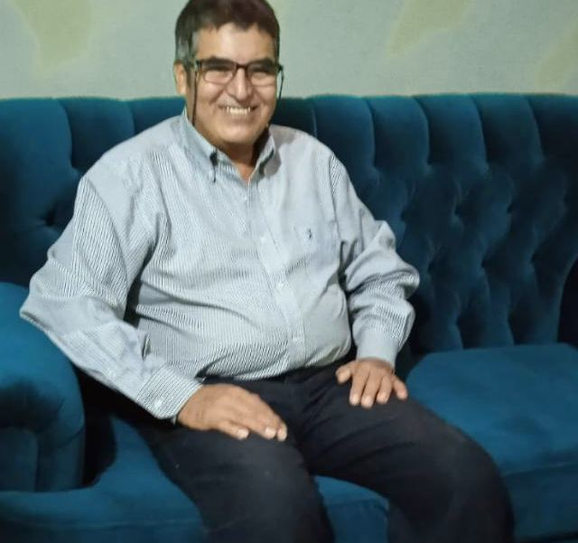
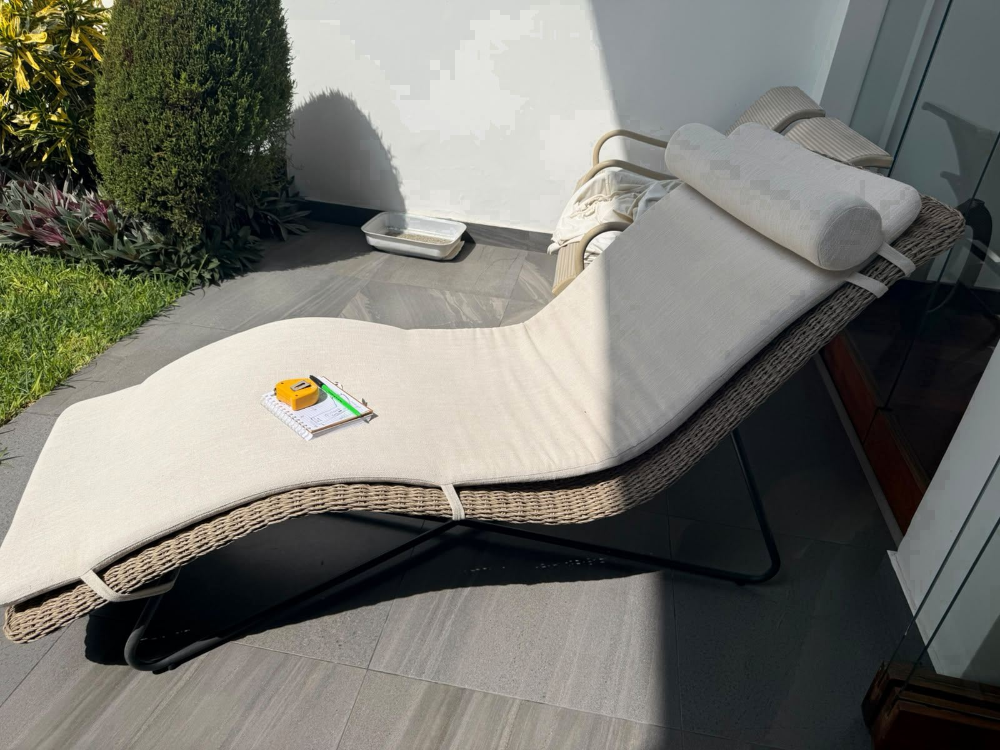
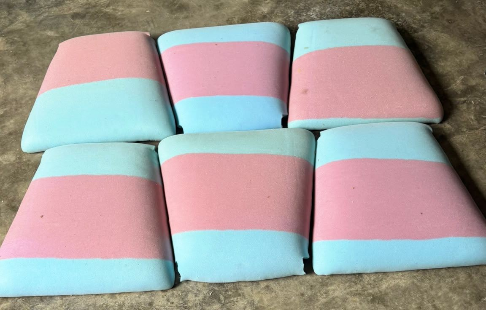
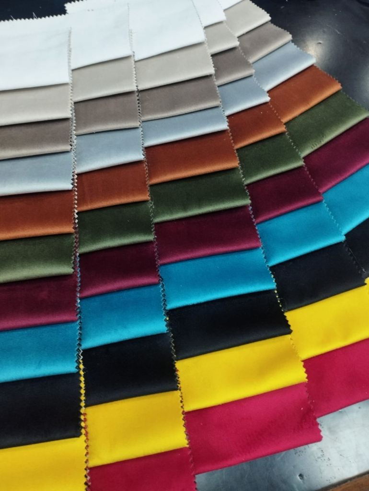

Plano 01 · Residencia

Rivera Concierge
Tapicería de Muebles
Sin plantillas artificiales ni intermediarios. Casi tres décadas restaurando y confeccionando muebles a mano en nuestro taller y en residencias reales de Lima, cuidando cada costura, espuma interna y estructura de madera.




En tiempos donde abundan catálogos genéricos e imágenes creadas por computadora, en Rivera Concierge preferimos mostrar nuestro trabajo tal como es: madera sólida, espuma de alta densidad y costuras hechas con paciencia en nuestro taller.
Durante 29 años, mi compromiso con las familias de Miraflores, Surco y San Isidro se ha sostenido sobre tres principios simples: escuchar con amabilidad, trabajar cada mueble como si fuera para nuestra propia casa y cumplir con rigor la fecha prometida.
Cronograma claro de recojo y entrega, respetando el tiempo de su hogar.
Asesoría honesta y trato cordial directamente con el maestro tapicero.
Refuerzo de estructura interna, cinchas elásticas y costuras alineadas a pulso.
Confección a medida en terciopelo antimanchas con respaldos curvos continuos y cojinería decorativa.

Tapizado en bouclé marfil de alto gramaje con brazos arquitectónicos anchos y espuma Zebra Paraíso.

Volumen geométrico limpio con encaje simétrico de costuras y asiento de firmeza ortopédica confortable.

Tapizado integral en lino pesado tono avena con vivos perimetrales y juego de cuatro cojines en contraste.

Respaldo envolvente con cuatro botones forrados a mano y vivo continuo que perfila toda la silueta.

Acabado extrasuave de tacto aterciopelado con asientos de alta recuperación y costuras reforzadas.

Tapizado en piel veteada tono caoba clásico con pespuntes dobles de alta resistencia para estudio o sala.

Restauración completa de sillón de lectura con respaldo capitoné profundo y mecanismo reclinable.

Tapizado en cuero marrón envejecido con aplicación manual de tachuelas de bronce oxidado una por una.

Centrado simétrico de patrón geométrico en respaldo y asiento sobre estructura de madera noble.

Confección de cojines a medida resistentes al sol y la humedad marina para departamentos con vista exterior.

Tapizado sastrero con pliegues encontrados en las esquinas, asiento capitoné y dos cojines cilíndricos.

Retiramos la espuma antigua deformada y colocamos espuma Zebra de alta densidad con napa siliconada nueva.

Cada cojín se moldea a la medida exacta del mueble para evitar arrugas y mantener las esquinas definidas.

Llevamos catálogos reales de lino, bouclé, terciopelo, chenille y cuero para que elija bajo la luz de su propia sala.
Envíenos una fotografía de su mueble por WhatsApp al 997 317 630. El Maestro Rivera le responderá personalmente con una cotización clara o coordinará una visita a su domicilio con nuestros muestrarios de telas.
Escribir por WhatsApp · 997 317 630Envíenos 1 o 2 fotos de su mueble actual para evaluar el modelo y las dimensiones aproximadas.
Le brindamos el presupuesto y llevamos los catálogos físicos de telas a su casa sin costo adicional.
Recogemos, restauramos a mano en nuestro taller y entregamos en la fecha exacta acordada.